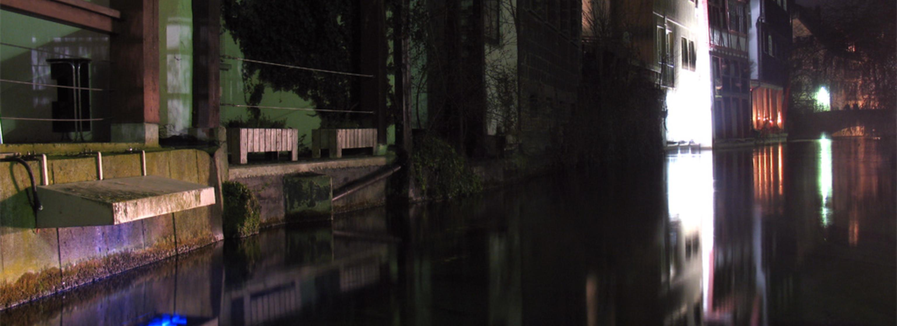
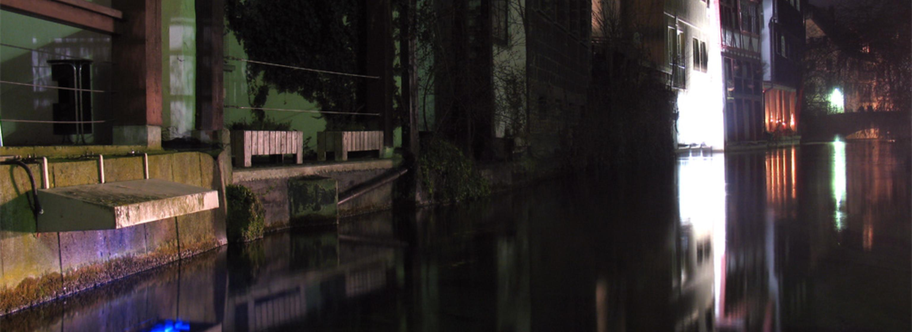

OpenCityCamp Ulm
datalove HSG, Uni Ulm
12. & 13. Mai 2012
Eine für jeden offene Tagung
rund um Open Data in Ulm





Was? – Offene Tagung rund um Open Data in Ulm, organisiert von der datalove HSG der Uni Ulm.
Wer? – Alle Interessierten, insbesondere auch Studierende jeglicher Fachrichtung!
Wie? – Vorträge, Sessions, Workshops, Diskussionen – zum Teil vorbereitet, zum Teil spontan.
Wieso? – Einführung in das Thema, Austausch von Ideen, Planung und Start von spontanen Projekten.